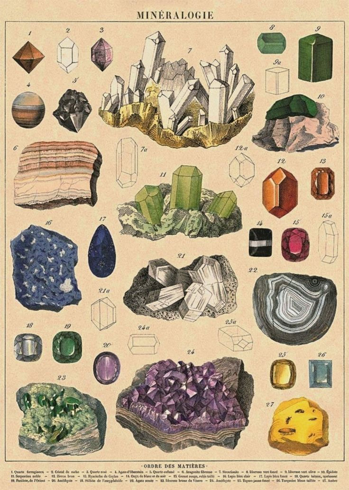
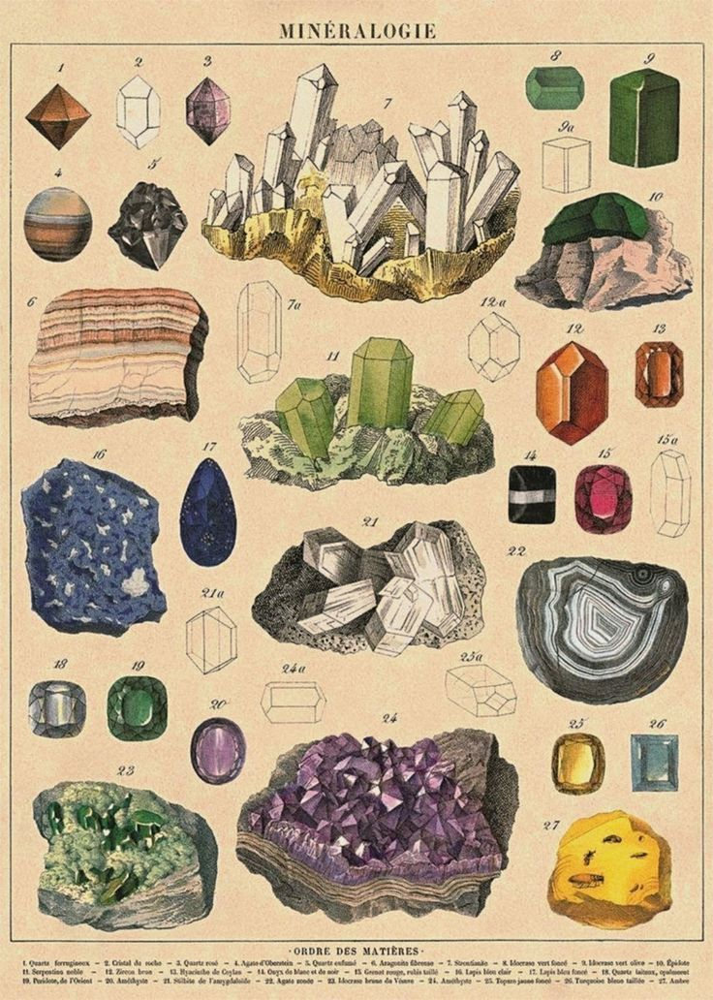

Questionable Research
This is the digital equivalent of a browser with 37 tabs open.
Internet Rabbit Holes
Deep dives into the weird and wonderful corners of the internet, including but not limited to:
"Why were Victorian people obsessed with phrenology?"
In the 1800s, wealthy Victorians became inexplicably convinced that the bumps on your skull could reveal your deepest character flaws. Enter phrenology - a pseudoscience that claimed to read your morality like a brain horoscope. It was used for everything from matchmaking to criminal profiling. Some people even kept phrenological busts in their parlor.
Filed under: Weird flex but okay
"How to fake your own death (theoretically)"
Let's be clear: this is strictly an academic exercise. That said, you'd need a staged accident, a body double (or cremation-friendly cover story), and a watertight offshore identity. Insurance fraud? Illegal. Escaping your responsibilities to start a new life as a goat farmer in rural New Zealand? Spiritually valid. Case studies include people who failed spectacularly - like the guy who "drowned" kayaking and was found years later hiding in a cupboard behind a fake wall.
Filed under: Don't try this at home
"The secret life of fake towns on maps (trap streets)"
Ever notice a town on Google Maps that doesn't seem to exist? You might have found a trap street - fictional places mapmakers sprinkle into their work to catch copyright thieves. The best part? Some of these ghost towns accidentally became real places after businesses, tourists, and even real estate developers started showing up.
Filed under: Cartographic fanfiction
"That time someone tried to sell the Eiffel Tower... twice"
In 1925, con artist Victor Lustig convinced scrap metal dealers that the Eiffel Tower was being torn down. He forged government documents, held a fake bidding process, and walked away with a suitcase full of cash. When no one came forward out of embarrassment, he did it again. The Eiffel Tower remained, but Lustig made international scammer history.
Filed under: Masterclass in audacity
"A guide to frog cryptids by region"
Yes, there are enough frog-based cryptids for a regional guide. From the Loveland Frogman in Ohio (who allegedly wields a wand that sparks) to the Namibian Tree Leaper (a rumored five-foot swamp witch frog), these amphibians range from adorable to eldritch. Includes stats, sighting timelines, and how likely each one is to whisper your name in the night.
Filed under: Swamp things that go bump in the night
"The Great Emu War: When Australia declared war on birds"
In 1932, Australia faced an unexpected enemy: 20,000 emus. These flightless birds had invaded farmland in Western Australia, trampling crops and ignoring all social etiquette. The government, in a bafflingly serious move, sent soldiers - armed with machine guns - to deal with the "threat." The emus were fast, unpredictable, and weirdly tactical. After multiple failed ambushes, jammed guns, and a casualty count of zero emus but plenty of dignity, the military retreated.
Filed under: Flightless but not fightless
Out-of-Context Screenshots
A curated collection of:
Bizarre Wikipedia excerpts


The internet's most reliable source of "wait, what?" moments.
Images that need no explanation (but we'll try anyway)


A picture is worth a thousand words, but sometimes those words are just "why?"
Rouge Facebook marketplace listings


The digital equivalent of a yard sale from another dimension.
Bootleg instruction manuals

"Warning: Do not attempt to iron while wearing the shirt" and other sage advice.
Conspiracy Lite™
Harmless speculative thinking, including such classics as:
"Maybe pigeons really are drones"
"What if clouds are just really good CGI?"
"Birds aren't real - but what if worms are too real?"
"Shakespeare didn't write his plays. It was his ghost writer."
"Maybe crop circles are just alien art school assignments"
The Footnotes
A collection of questionable citations, including:
-
Citations from "an 80s home improvement forum"You'd be surprised how often this comes up. A guy named Steve with 17 posts and an ASCII American flag signature once said "ghosts hate copper wiring," and that's now gospel in certain circles.Filed under: DIY metaphysics
-
Sources cited as "Trust me bro"The academic equivalent of a guy in sunglasses whispering conspiracy facts at a dive bar. "I read it somewhere" and "My uncle works for NASA" are the gold standard here.Filed under: Peer-unreviewed
- Wikipedia's Collection of Unusual Articles
- Full Article Here
- As seen on Tumblr in 2012
- The Polish Man
- Cited in: "My cousin told me once at a BBQ"
- Primary source: Vibes